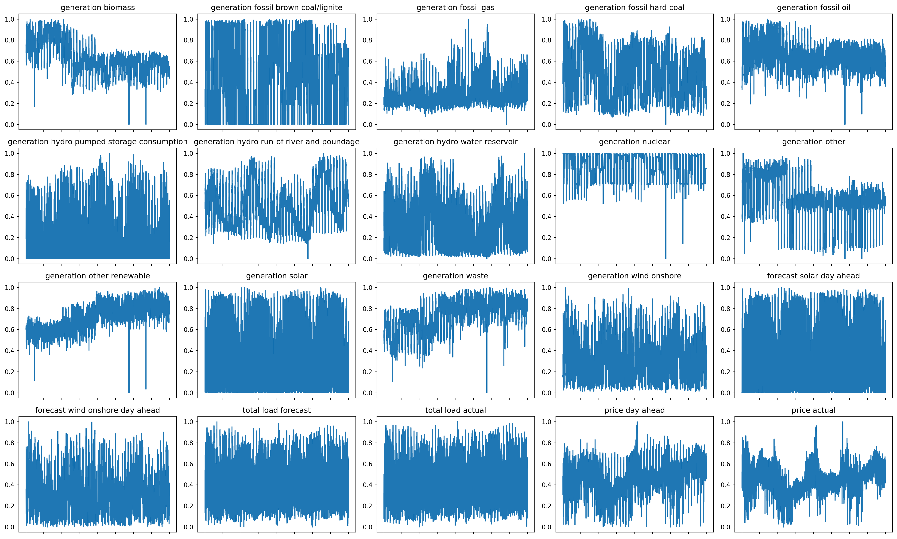

import pandas as pd
energy_df = pd.read_csv("energy_dataset.csv", parse_dates=['time'])
pd.set_option('display.max_rows', None) # Display all rows
pd.set_option('display.max_columns', None) # Display all columnsEnergy Price Prediction
Disclaimer
ChatGPT 4.o by OpenAI was used generously for the generation of most of the code in this project.
Data
For my project, I will be using Hourly Energy Demand Generation and Weather time series data from Kaggle. My reason for this is that I will be working with the data of an energy company this summer, and would like to have some exposure to what matters to these people and how to be able to make some prediction models. This dataset has 2 files, one with the hourly energy generation of many different energy sources, forecasted/actual load, day ahead, and actual prices. The other one has the weather information for the very same data points. I will be using only the first dataset, power generation, for simplicity. It already has plenty of predictors for us to choose from.
The next step is basic cleanup. Let’s describe the dataset.
print(energy_df.describe()) generation biomass generation fossil brown coal/lignite \
count 35045.000000 35046.000000
mean 383.513540 448.059208
std 85.353943 354.568590
min 0.000000 0.000000
25% 333.000000 0.000000
50% 367.000000 509.000000
75% 433.000000 757.000000
max 592.000000 999.000000
generation fossil coal-derived gas generation fossil gas \
count 35046.0 35046.000000
mean 0.0 5622.737488
std 0.0 2201.830478
min 0.0 0.000000
25% 0.0 4126.000000
50% 0.0 4969.000000
75% 0.0 6429.000000
max 0.0 20034.000000
generation fossil hard coal generation fossil oil \
count 35046.000000 35045.000000
mean 4256.065742 298.319789
std 1961.601013 52.520673
min 0.000000 0.000000
25% 2527.000000 263.000000
50% 4474.000000 300.000000
75% 5838.750000 330.000000
max 8359.000000 449.000000
generation fossil oil shale generation fossil peat \
count 35046.0 35046.0
mean 0.0 0.0
std 0.0 0.0
min 0.0 0.0
25% 0.0 0.0
50% 0.0 0.0
75% 0.0 0.0
max 0.0 0.0
generation geothermal generation hydro pumped storage aggregated \
count 35046.0 0.0
mean 0.0 NaN
std 0.0 NaN
min 0.0 NaN
25% 0.0 NaN
50% 0.0 NaN
75% 0.0 NaN
max 0.0 NaN
generation hydro pumped storage consumption \
count 35045.000000
mean 475.577343
std 792.406614
min 0.000000
25% 0.000000
50% 68.000000
75% 616.000000
max 4523.000000
generation hydro run-of-river and poundage \
count 35045.000000
mean 972.116108
std 400.777536
min 0.000000
25% 637.000000
50% 906.000000
75% 1250.000000
max 2000.000000
generation hydro water reservoir generation marine \
count 35046.000000 35045.0
mean 2605.114735 0.0
std 1835.199745 0.0
min 0.000000 0.0
25% 1077.250000 0.0
50% 2164.000000 0.0
75% 3757.000000 0.0
max 9728.000000 0.0
generation nuclear generation other generation other renewable \
count 35047.000000 35046.000000 35046.000000
mean 6263.907039 60.228585 85.639702
std 839.667958 20.238381 14.077554
min 0.000000 0.000000 0.000000
25% 5760.000000 53.000000 73.000000
50% 6566.000000 57.000000 88.000000
75% 7025.000000 80.000000 97.000000
max 7117.000000 106.000000 119.000000
generation solar generation waste generation wind offshore \
count 35046.000000 35045.000000 35046.0
mean 1432.665925 269.452133 0.0
std 1680.119887 50.195536 0.0
min 0.000000 0.000000 0.0
25% 71.000000 240.000000 0.0
50% 616.000000 279.000000 0.0
75% 2578.000000 310.000000 0.0
max 5792.000000 357.000000 0.0
generation wind onshore forecast solar day ahead \
count 35046.000000 35064.000000
mean 5464.479769 1439.066735
std 3213.691587 1677.703355
min 0.000000 0.000000
25% 2933.000000 69.000000
50% 4849.000000 576.000000
75% 7398.000000 2636.000000
max 17436.000000 5836.000000
forecast wind offshore eday ahead forecast wind onshore day ahead \
count 0.0 35064.000000
mean NaN 5471.216689
std NaN 3176.312853
min NaN 237.000000
25% NaN 2979.000000
50% NaN 4855.000000
75% NaN 7353.000000
max NaN 17430.000000
total load forecast total load actual price day ahead price actual
count 35064.000000 35028.000000 35064.000000 35064.000000
mean 28712.129962 28696.939905 49.874341 57.884023
std 4594.100854 4574.987950 14.618900 14.204083
min 18105.000000 18041.000000 2.060000 9.330000
25% 24793.750000 24807.750000 41.490000 49.347500
50% 28906.000000 28901.000000 50.520000 58.020000
75% 32263.250000 32192.000000 60.530000 68.010000
max 41390.000000 41015.000000 101.990000 116.800000 We have many columns with vastly different ranges of values. Some columns have only NaNs, and some of them are all 0s. Those will be dropped. Let’s check innocent missing data.
import pandas as pd
import numpy as np
import matplotlib.pyplot as plt
import seaborn as sns
from sklearn.preprocessing import StandardScaler
from sklearn.decomposition import PCA
from sklearn.model_selection import train_test_split
from sklearn.linear_model import LinearRegression
from sklearn.metrics import mean_squared_error
from sklearn.preprocessing import MinMaxScalerenergy_df['time'] = pd.to_datetime(energy_df['time'], utc=True)
print("energy data nulls:")
print(energy_df.isnull().sum())energy data nulls:
time 0
generation biomass 19
generation fossil brown coal/lignite 18
generation fossil coal-derived gas 18
generation fossil gas 18
generation fossil hard coal 18
generation fossil oil 19
generation fossil oil shale 18
generation fossil peat 18
generation geothermal 18
generation hydro pumped storage aggregated 35064
generation hydro pumped storage consumption 19
generation hydro run-of-river and poundage 19
generation hydro water reservoir 18
generation marine 19
generation nuclear 17
generation other 18
generation other renewable 18
generation solar 18
generation waste 19
generation wind offshore 18
generation wind onshore 18
forecast solar day ahead 0
forecast wind offshore eday ahead 35064
forecast wind onshore day ahead 0
total load forecast 0
total load actual 36
price day ahead 0
price actual 0
dtype: int64It looks like we will also have to fill those in. I will simply take the average of the 2 points next to each. And because I am a machine learning guy and not a statistics person, I like my predictors normalized. It is also better for forecasting techniques, or so Google says. After preprocessing, the data looks like this:
energy_df.set_index('time', inplace=True)
data_ffill = energy_df.fillna(method='ffill')
data_bfill = energy_df.fillna(method='bfill')
data_filled = (data_ffill + data_bfill) / 2
data_filled = data_filled.drop("generation hydro pumped storage aggregated",axis=1)
data_filled = data_filled.drop("forecast wind offshore eday ahead",axis=1)
e_df = data_filled
scaler = MinMaxScaler()
e_df_X = e_df.copy()
e_df_X[e_df_X.columns] = scaler.fit_transform(e_df_X)
e_df_X = e_df_X.drop("generation fossil oil shale", axis=1)
e_df_X = e_df_X.drop("generation fossil peat", axis=1)
e_df_X = e_df_X.drop("generation geothermal", axis=1)
e_df_X = e_df_X.drop("generation fossil coal-derived gas", axis=1)
e_df_X = e_df_X.drop("generation marine", axis=1)
e_df_X = e_df_X.drop("generation wind offshore", axis=1)
e_df_X.head()C:\Users\merto\AppData\Local\Temp\ipykernel_15684\2299405197.py:2: FutureWarning: DataFrame.fillna with 'method' is deprecated and will raise in a future version. Use obj.ffill() or obj.bfill() instead.
data_ffill = energy_df.fillna(method='ffill')
C:\Users\merto\AppData\Local\Temp\ipykernel_15684\2299405197.py:3: FutureWarning: DataFrame.fillna with 'method' is deprecated and will raise in a future version. Use obj.ffill() or obj.bfill() instead.
data_bfill = energy_df.fillna(method='bfill')| generation biomass | generation fossil brown coal/lignite | generation fossil gas | generation fossil hard coal | generation fossil oil | generation hydro pumped storage consumption | generation hydro run-of-river and poundage | generation hydro water reservoir | generation nuclear | generation other | generation other renewable | generation solar | generation waste | generation wind onshore | forecast solar day ahead | forecast wind onshore day ahead | total load forecast | total load actual | price day ahead | price actual | |
|---|---|---|---|---|---|---|---|---|---|---|---|---|---|---|---|---|---|---|---|---|
| time | ||||||||||||||||||||
| 2014-12-31 23:00:00+00:00 | 0.755068 | 0.329329 | 0.241789 | 0.576744 | 0.360802 | 0.190803 | 0.5255 | 0.195210 | 0.997049 | 0.40566 | 0.613445 | 0.008460 | 0.549020 | 0.365795 | 0.002913 | 0.360554 | 0.344127 | 0.319666 | 0.480737 | 0.521820 |
| 2015-01-01 00:00:00+00:00 | 0.758446 | 0.328328 | 0.259359 | 0.568848 | 0.351893 | 0.203405 | 0.5045 | 0.170436 | 0.997049 | 0.40566 | 0.596639 | 0.008633 | 0.546218 | 0.337807 | 0.002742 | 0.326819 | 0.293279 | 0.276008 | 0.460723 | 0.517261 |
| 2015-01-01 01:00:00+00:00 | 0.756757 | 0.323323 | 0.242438 | 0.548032 | 0.349666 | 0.257351 | 0.4865 | 0.140933 | 0.997471 | 0.40566 | 0.613445 | 0.008633 | 0.549020 | 0.313203 | 0.001371 | 0.303437 | 0.232338 | 0.204274 | 0.453017 | 0.513166 |
| 2015-01-01 02:00:00+00:00 | 0.739865 | 0.254254 | 0.215334 | 0.494198 | 0.356347 | 0.332302 | 0.4745 | 0.080078 | 0.997330 | 0.40566 | 0.630252 | 0.008633 | 0.535014 | 0.300413 | 0.000343 | 0.285814 | 0.194846 | 0.141247 | 0.402382 | 0.465153 |
| 2015-01-01 03:00:00+00:00 | 0.722973 | 0.187187 | 0.206150 | 0.459385 | 0.347439 | 0.403714 | 0.4765 | 0.074013 | 0.997190 | 0.40566 | 0.621849 | 0.007251 | 0.529412 | 0.283035 | 0.001542 | 0.268947 | 0.158042 | 0.096762 | 0.363755 | 0.434633 |
df = e_df_X
inf_counts = np.isinf(e_df_X).sum()
inf_countsgeneration biomass 0
generation fossil brown coal/lignite 0
generation fossil gas 0
generation fossil hard coal 0
generation fossil oil 0
generation hydro pumped storage consumption 0
generation hydro run-of-river and poundage 0
generation hydro water reservoir 0
generation nuclear 0
generation other 0
generation other renewable 0
generation solar 0
generation waste 0
generation wind onshore 0
forecast solar day ahead 0
forecast wind onshore day ahead 0
total load forecast 0
total load actual 0
price day ahead 0
price actual 0
dtype: int64We have 19 very nice predictors. Now we can get to business.
Questions
Using our data science tools and common sense, we are hoping to answer the following questions in this project:
How much does each different type of energy source affect the energy price?
What model can we use to best predict energy prices?
Which predictors should we use to predict energy prices?
To find the answers to these questions, normalizing the values will come in handy because we can compare the coefficients and have a rough idea about the magnitude of the correlation. We will utilize linear regression, Arima, and XGBoost to predict the energy price using different sets of predictors. We will also utilize subset selection techniques as well as lasso to figure out what combination of predictors works well for linear regression.
Exploratory Analysis
This is time series data after all, it wouldn’t be normal if we didn’t graph the target out.
import matplotlib.pyplot as plt
# Plot the time series
plt.figure(figsize=(12, 6))
plt.plot(df['price actual'])
plt.title('Time Series Plot')
plt.xlabel('Date')
plt.ylabel('price actual')
plt.show()Nice, this is a very understandable, seasonal, and typical time-series data. Now, let’s graph all of our columns.
columns_to_plot = df.columns.tolist()
plt.figure(figsize=(15, 10))
for col in columns_to_plot:
plt.plot(df.index, df[col], label=col)
plt.legend(loc='upper left', bbox_to_anchor=(1, 1))
plt.title('Time Series Data for Predictors and Target')
plt.xlabel('Date')
plt.ylabel('Values')
# Adjust layout for better display of the legend
plt.tight_layout()
# Show plot
plt.show()Interesting, but unhelpful. Let’s make a grid.
import math
columns_to_plot = df.columns.tolist()
num_columns = len(columns_to_plot)
grid_size = math.ceil(math.sqrt(num_columns))
fig, axes = plt.subplots(grid_size, grid_size, figsize=(20, 15), sharex=True)
axes = axes.flatten()
for i, col in enumerate(columns_to_plot):
axes[i].plot(df.index, df[col])
axes[i].set_title(col)
axes[i].tick_params(axis='x', rotation=45)
for j in range(i + 1, len(axes)):
fig.delaxes(axes[j])
plt.tight_layout()
plt.show()
We can see that some of our predictors like generation solar, forecast solar, generation other renewable, generation nuclear, and generation fossil oil are almost always high up in their range. They are stable in their production except for some rare cases that define the minimum. This makes sense because min-max normalization was used. Except for this, the time series data looks good and reasonable.
A correlation colormap can help foresee what can be useful.
plt.figure(figsize=(10, 8))
sns.heatmap(df.corr(), annot=True, cmap='coolwarm')
plt.title('Correlation Heatmap')
plt.show()It looks like generation fossil brown coal/ignite, generation fossil gas, generation fossil hard coal, generation hydro pumped storage consumption, generation hydro run-of-river and poundage, generation wind onshore, forecast wind onshore day ahead, total load forecast, total load actual, price day ahead, are correlated with our target variable.
Aside from this, generation solar is highly correlated with forecast solar day ahead, generation wind onshore is highly correlated with forecast wind onshore day ahead,
and total load forecast is highly correlated with total load actual. Of course, this makes total sense, as they are the forecasts of each other. To avoid multicollinearity, we shall remove the forecast columns for these 3 values from the data frame, as well as the price day ahead which is like cheating for predictions.
df = df.drop(["forecast solar day ahead", "forecast wind onshore day ahead", "total load forecast", "price day ahead"], axis=1)It is also good practice to look at the histograms of our predictors.
num_columns = len(df.columns)
num_rows = (num_columns + 2) // 3
fig, axes = plt.subplots(num_rows, 3, figsize=(15, num_rows * 5))
axes = axes.flatten()
for i, col in enumerate(df.columns):
sns.histplot(df[col], kde=False, ax=axes[i])
axes[i].set_title(f'Histogram of {col}')
axes[i].set_xlabel(col)
axes[i].set_ylabel('Frequency')
for j in range(i + 1, len(axes)):
fig.delaxes(axes[j])
plt.tight_layout()
plt.show()
As we have also seen with the plots of the predictors, some of them are skewed towards one side. However, they are not so extreme enough to need additional work. If we had any extreme skews, I’d try using a different normalization technique.
Models
- Linear Regression
Lets start with linear regression. We will fit with each predictor 1 by 1 and see the error.
import itertools
from sklearn.model_selection import train_test_split
from sklearn.linear_model import LinearRegression
from sklearn.metrics import mean_squared_error
import numpy as np
target_variable = 'price actual'
predictors = df.columns.drop(target_variable)
results = []
X = df[predictors]
y = df[target_variable]
X_train, X_test, y_train, y_test = train_test_split(X, y, test_size=0.2, random_state=42)
for predictor in predictors:
X_train_single = X_train[[predictor]]
X_test_single = X_test[[predictor]]
model = LinearRegression()
model.fit(X_train_single, y_train)
y_pred = model.predict(X_test_single)
rmse = np.sqrt(mean_squared_error(y_test, y_pred))
results.append((predictor, rmse))
results.sort(key=lambda x: x[1])
max_predictor_len = max(len(predictor) for predictor in predictors)
header = f"{'Predictor':<{max_predictor_len}} {'RMSE':>10}"
print(header)
print("=" * (max_predictor_len + 11))
for predictor, rmse in results:
print(f"{predictor:<{max_predictor_len}} {rmse:>10.4f}")Predictor RMSE
======================================================
generation fossil gas 0.1176
generation fossil hard coal 0.1182
total load actual 0.1198
generation hydro pumped storage consumption 0.1200
generation fossil brown coal/lignite 0.1240
generation fossil oil 0.1269
generation other renewable 0.1279
generation wind onshore 0.1296
generation waste 0.1305
generation biomass 0.1313
generation hydro run-of-river and poundage 0.1313
generation other 0.1318
generation hydro water reservoir 0.1323
generation solar 0.1324
generation nuclear 0.1325It seems that fossil gas and hard coal are the top 2 predictors, used to predict all by themselves of course. The best error we can get is 0.1176. Now lets try fitting with all of them, we want the really significant predictors, so the p-value cutoff will be at 0.01.
import statsmodels.api as sm
X_train_with_const = sm.add_constant(X_train)
model_stats = sm.OLS(y_train, X_train_with_const).fit()
p_values = model_stats.pvalues
alpha = 0.01
significant_coeffs = p_values[p_values < alpha]
print("Significant coefficients and their p-values:")
print(significant_coeffs)
print()
print("Insignificant coefficients:")
print(p_values[p_values > alpha])
X_test_with_const = sm.add_constant(X_test)
y_pred = model_stats.predict(X_test_with_const)
print("")
rmse = np.sqrt(mean_squared_error(y_test, y_pred))
print(f'Statsmodels RMSE: {rmse}')Significant coefficients and their p-values:
generation biomass 7.075273e-83
generation fossil gas 1.515632e-82
generation fossil hard coal 9.741629e-164
generation fossil oil 1.104787e-13
generation hydro pumped storage consumption 4.686107e-103
generation hydro run-of-river and poundage 1.774009e-06
generation other 6.512099e-20
generation other renewable 1.825027e-305
generation solar 5.750305e-03
generation waste 3.688493e-11
generation wind onshore 1.256884e-09
total load actual 2.851242e-06
dtype: float64
Insignificant coefficients:
const 0.608791
generation fossil brown coal/lignite 0.666396
generation hydro water reservoir 0.044185
generation nuclear 0.350767
dtype: float64
Statsmodels RMSE: 0.10527652567187645We see that generation fossil brown coal, generation nuclear, and generation hydro water reservoir are not really correlated to price actual when fit with all the predictors. However, the rest of the predictors make it through. The error we get is 0.105, which is just a little lower than just using fossil gas as a predictor. Maybe we can do better. Let’s do backward selection for choosing our predictors better.
# Backward Elimination
def backward_elimination(X, y, significance_level=0.01):
num_features = X.shape[1]
for i in range(num_features, 0, -1):
X_with_const = sm.add_constant(X)
model = sm.OLS(y, X_with_const).fit()
p_values = model.pvalues.iloc[1:] # Exclude constant term
max_p_value = p_values.max()
if max_p_value > significance_level:
max_p_value_index = p_values.idxmax()
X = X.drop(columns=max_p_value_index)
else:
break
return X
X_train_backward = backward_elimination(X_train, y_train)
model_lr = LinearRegression()
model_lr.fit(X_train_backward, y_train)
y_pred_lr = model_lr.predict(X_test[X_train_backward.columns])
rmse_lr = np.sqrt(mean_squared_error(y_test, y_pred_lr))
print(f'Linear Regression RMSE: {rmse_lr}')
X_train_backward_with_const = sm.add_constant(X_train_backward)
model_lr_stats = sm.OLS(y_train, X_train_backward_with_const).fit()
print("\nLinear Regression Coefficients:")
backward_coef_names = zip(X.columns, model_lr.coef_)
for column, coefficient in backward_coef_names:
print(f"{column}: {coefficient}")
# print(model_lr.coef_)
print("\nLinear Regression P-values:")
print(model_lr_stats.pvalues)Linear Regression RMSE: 0.10530293680985038
Linear Regression Coefficients:
generation biomass: 0.14506544285860482
generation fossil brown coal/lignite: 0.19868867311438893
generation fossil gas: 0.15222922849974962
generation fossil hard coal: -0.057479172415512876
generation fossil oil: -0.11486552480672783
generation hydro pumped storage consumption: 0.030132095128287108
generation hydro run-of-river and poundage: 0.04098105222780272
generation hydro water reservoir: 0.3215163342525464
generation nuclear: -0.046884934536481265
generation other: 0.031012239700529704
generation other renewable: 0.06883118396789902
Linear Regression P-values:
const 9.308600e-01
generation biomass 2.819414e-86
generation fossil gas 3.965385e-104
generation fossil hard coal 1.646394e-243
generation fossil oil 2.620893e-15
generation hydro pumped storage consumption 1.372118e-108
generation hydro run-of-river and poundage 6.927898e-12
generation other 7.473160e-20
generation other renewable 0.000000e+00
generation waste 3.150260e-13
generation wind onshore 2.054857e-10
total load actual 3.507323e-32
dtype: float64Very similar results to before, but a few additional predictors are eliminated. Nuclear, fossil brown coal, hydro water reservoir, generation solar do not make it through the backwards selection process, and we still keep a 0.105 RMSE. We will not try ridge regression to see if it helps.
from sklearn.linear_model import Ridge
ridge_model = Ridge(alpha=1.0)
ridge_model.fit(X_train, y_train)
# Make predictions
y_pred = ridge_model.predict(X_test)
# Calculate RMSE
rmse = np.sqrt(mean_squared_error(y_test, y_pred))
print("RMSE:", rmse)
# Get coefficients from Ridge regression
ridge_coefficients = pd.Series(ridge_model.coef_, index=predictors)
# Print coefficients
print("Coefficients:")
print(ridge_coefficients)RMSE: 0.10527871627670903
Coefficients:
generation biomass 0.142497
generation fossil brown coal/lignite -0.001286
generation fossil gas 0.205920
generation fossil hard coal 0.159236
generation fossil oil -0.053722
generation hydro pumped storage consumption -0.117312
generation hydro run-of-river and poundage 0.025850
generation hydro water reservoir 0.012957
generation nuclear -0.006537
generation other 0.041319
generation other renewable 0.322348
generation solar 0.008479
generation waste -0.042427
generation wind onshore 0.041653
total load actual 0.051094
dtype: float64No improvement on RMSE, however, we see that with regularization, only some of the predictors keep their large coefficients. Fossil gas and renewables dominate the model when ridge regression is used.
- SARIMAX
Now let us try a little more complicated model, SARIMAX. This will try to take into account the seasonality of the data and make use of a moving average, which should be somewhat better than a boring linear regression. Lets do a grid search to see what parameters we can use.
from statsmodels.tsa.statespace.sarimax import SARIMAX
df_M = df.resample('ME').mean()
df_M = df_M.asfreq('ME')
# Define the target variable and predictors
target_variable = 'price actual'
exog_vars = df_M.drop(columns=[target_variable])
# Perform grid search for hyperparameter tuning
p = d = q = range(0, 2)
seasonal_p = seasonal_d = seasonal_q = range(0, 2)
seasonal_s = [12] # Seasonal period (12 for monthly data)
# Generate all combinations of p, d, q triplets
pdq = list(itertools.product(p, d, q))
seasonal_pdq = list(itertools.product(seasonal_p, seasonal_d, seasonal_q, seasonal_s))
best_aic = np.inf
best_params = None
best_seasonal_params = None
for param in pdq:
for seasonal_param in seasonal_pdq:
try:
model = SARIMAX(df_M[target_variable],
exog=exog_vars,
order=param,
seasonal_order=seasonal_param,
enforce_stationarity=True,
enforce_invertibility=False)
results = model.fit(disp=False,maxiter=300)
if results.aic < best_aic:
best_aic = results.aic
best_params = param
best_seasonal_params = seasonal_param
except Exception as e:
print(e)
continue
print(f'Best SARIMAX params: {best_params}')
print(f'Best Seasonal params: {best_seasonal_params}')
print(f'Best AIC: {best_aic}')C:\Users\merto\Documents\.virtualenvs\r-reticulate\Lib\site-packages\statsmodels\base\model.py:607: ConvergenceWarning: Maximum Likelihood optimization failed to converge. Check mle_retvals
warnings.warn("Maximum Likelihood optimization failed to "
C:\Users\merto\Documents\.virtualenvs\r-reticulate\Lib\site-packages\statsmodels\base\model.py:607: ConvergenceWarning: Maximum Likelihood optimization failed to converge. Check mle_retvals
warnings.warn("Maximum Likelihood optimization failed to "
C:\Users\merto\Documents\.virtualenvs\r-reticulate\Lib\site-packages\statsmodels\base\model.py:607: ConvergenceWarning: Maximum Likelihood optimization failed to converge. Check mle_retvals
warnings.warn("Maximum Likelihood optimization failed to "
C:\Users\merto\Documents\.virtualenvs\r-reticulate\Lib\site-packages\statsmodels\base\model.py:607: ConvergenceWarning: Maximum Likelihood optimization failed to converge. Check mle_retvals
warnings.warn("Maximum Likelihood optimization failed to "
C:\Users\merto\Documents\.virtualenvs\r-reticulate\Lib\site-packages\statsmodels\base\model.py:607: ConvergenceWarning: Maximum Likelihood optimization failed to converge. Check mle_retvals
warnings.warn("Maximum Likelihood optimization failed to "
C:\Users\merto\Documents\.virtualenvs\r-reticulate\Lib\site-packages\statsmodels\base\model.py:607: ConvergenceWarning: Maximum Likelihood optimization failed to converge. Check mle_retvals
warnings.warn("Maximum Likelihood optimization failed to "
C:\Users\merto\Documents\.virtualenvs\r-reticulate\Lib\site-packages\statsmodels\base\model.py:607: ConvergenceWarning: Maximum Likelihood optimization failed to converge. Check mle_retvals
warnings.warn("Maximum Likelihood optimization failed to "
C:\Users\merto\Documents\.virtualenvs\r-reticulate\Lib\site-packages\statsmodels\base\model.py:607: ConvergenceWarning: Maximum Likelihood optimization failed to converge. Check mle_retvals
warnings.warn("Maximum Likelihood optimization failed to "
C:\Users\merto\Documents\.virtualenvs\r-reticulate\Lib\site-packages\statsmodels\tsa\statespace\sarimax.py:866: UserWarning: Too few observations to estimate starting parameters for seasonal ARMA. All parameters except for variances will be set to zeros.
warn('Too few observations to estimate starting parameters%s.'
C:\Users\merto\Documents\.virtualenvs\r-reticulate\Lib\site-packages\statsmodels\base\model.py:607: ConvergenceWarning: Maximum Likelihood optimization failed to converge. Check mle_retvals
warnings.warn("Maximum Likelihood optimization failed to "
C:\Users\merto\Documents\.virtualenvs\r-reticulate\Lib\site-packages\statsmodels\tsa\statespace\sarimax.py:866: UserWarning: Too few observations to estimate starting parameters for seasonal ARMA. All parameters except for variances will be set to zeros.
warn('Too few observations to estimate starting parameters%s.'
C:\Users\merto\Documents\.virtualenvs\r-reticulate\Lib\site-packages\statsmodels\base\model.py:607: ConvergenceWarning: Maximum Likelihood optimization failed to converge. Check mle_retvals
warnings.warn("Maximum Likelihood optimization failed to "
C:\Users\merto\Documents\.virtualenvs\r-reticulate\Lib\site-packages\statsmodels\tsa\statespace\sarimax.py:866: UserWarning: Too few observations to estimate starting parameters for seasonal ARMA. All parameters except for variances will be set to zeros.
warn('Too few observations to estimate starting parameters%s.'
C:\Users\merto\Documents\.virtualenvs\r-reticulate\Lib\site-packages\statsmodels\base\model.py:607: ConvergenceWarning: Maximum Likelihood optimization failed to converge. Check mle_retvals
warnings.warn("Maximum Likelihood optimization failed to "
C:\Users\merto\Documents\.virtualenvs\r-reticulate\Lib\site-packages\statsmodels\tsa\statespace\sarimax.py:866: UserWarning: Too few observations to estimate starting parameters for seasonal ARMA. All parameters except for variances will be set to zeros.
warn('Too few observations to estimate starting parameters%s.'
C:\Users\merto\Documents\.virtualenvs\r-reticulate\Lib\site-packages\statsmodels\base\model.py:607: ConvergenceWarning: Maximum Likelihood optimization failed to converge. Check mle_retvals
warnings.warn("Maximum Likelihood optimization failed to "
C:\Users\merto\Documents\.virtualenvs\r-reticulate\Lib\site-packages\statsmodels\base\model.py:607: ConvergenceWarning: Maximum Likelihood optimization failed to converge. Check mle_retvals
warnings.warn("Maximum Likelihood optimization failed to "
C:\Users\merto\Documents\.virtualenvs\r-reticulate\Lib\site-packages\statsmodels\base\model.py:607: ConvergenceWarning: Maximum Likelihood optimization failed to converge. Check mle_retvals
warnings.warn("Maximum Likelihood optimization failed to "
C:\Users\merto\Documents\.virtualenvs\r-reticulate\Lib\site-packages\statsmodels\base\model.py:607: ConvergenceWarning: Maximum Likelihood optimization failed to converge. Check mle_retvals
warnings.warn("Maximum Likelihood optimization failed to "
C:\Users\merto\Documents\.virtualenvs\r-reticulate\Lib\site-packages\statsmodels\base\model.py:607: ConvergenceWarning: Maximum Likelihood optimization failed to converge. Check mle_retvals
warnings.warn("Maximum Likelihood optimization failed to "
C:\Users\merto\Documents\.virtualenvs\r-reticulate\Lib\site-packages\statsmodels\base\model.py:607: ConvergenceWarning: Maximum Likelihood optimization failed to converge. Check mle_retvals
warnings.warn("Maximum Likelihood optimization failed to "
C:\Users\merto\Documents\.virtualenvs\r-reticulate\Lib\site-packages\statsmodels\base\model.py:607: ConvergenceWarning: Maximum Likelihood optimization failed to converge. Check mle_retvals
warnings.warn("Maximum Likelihood optimization failed to "
C:\Users\merto\Documents\.virtualenvs\r-reticulate\Lib\site-packages\statsmodels\tsa\statespace\sarimax.py:866: UserWarning: Too few observations to estimate starting parameters for seasonal ARMA. All parameters except for variances will be set to zeros.
warn('Too few observations to estimate starting parameters%s.'
C:\Users\merto\Documents\.virtualenvs\r-reticulate\Lib\site-packages\statsmodels\base\model.py:607: ConvergenceWarning: Maximum Likelihood optimization failed to converge. Check mle_retvals
warnings.warn("Maximum Likelihood optimization failed to "
C:\Users\merto\Documents\.virtualenvs\r-reticulate\Lib\site-packages\statsmodels\tsa\statespace\sarimax.py:866: UserWarning: Too few observations to estimate starting parameters for seasonal ARMA. All parameters except for variances will be set to zeros.
warn('Too few observations to estimate starting parameters%s.'
C:\Users\merto\Documents\.virtualenvs\r-reticulate\Lib\site-packages\statsmodels\base\model.py:607: ConvergenceWarning: Maximum Likelihood optimization failed to converge. Check mle_retvals
warnings.warn("Maximum Likelihood optimization failed to "
C:\Users\merto\Documents\.virtualenvs\r-reticulate\Lib\site-packages\statsmodels\tsa\statespace\sarimax.py:966: UserWarning: Non-stationary starting autoregressive parameters found. Using zeros as starting parameters.
warn('Non-stationary starting autoregressive parameters'
C:\Users\merto\Documents\.virtualenvs\r-reticulate\Lib\site-packages\statsmodels\base\model.py:607: ConvergenceWarning: Maximum Likelihood optimization failed to converge. Check mle_retvals
warnings.warn("Maximum Likelihood optimization failed to "
C:\Users\merto\Documents\.virtualenvs\r-reticulate\Lib\site-packages\statsmodels\tsa\statespace\sarimax.py:966: UserWarning: Non-stationary starting autoregressive parameters found. Using zeros as starting parameters.
warn('Non-stationary starting autoregressive parameters'
C:\Users\merto\Documents\.virtualenvs\r-reticulate\Lib\site-packages\statsmodels\base\model.py:607: ConvergenceWarning: Maximum Likelihood optimization failed to converge. Check mle_retvals
warnings.warn("Maximum Likelihood optimization failed to "
C:\Users\merto\Documents\.virtualenvs\r-reticulate\Lib\site-packages\statsmodels\tsa\statespace\sarimax.py:866: UserWarning: Too few observations to estimate starting parameters for seasonal ARMA. All parameters except for variances will be set to zeros.
warn('Too few observations to estimate starting parameters%s.'
C:\Users\merto\Documents\.virtualenvs\r-reticulate\Lib\site-packages\statsmodels\tsa\statespace\sarimax.py:966: UserWarning: Non-stationary starting autoregressive parameters found. Using zeros as starting parameters.
warn('Non-stationary starting autoregressive parameters'
C:\Users\merto\Documents\.virtualenvs\r-reticulate\Lib\site-packages\statsmodels\base\model.py:607: ConvergenceWarning: Maximum Likelihood optimization failed to converge. Check mle_retvals
warnings.warn("Maximum Likelihood optimization failed to "
C:\Users\merto\Documents\.virtualenvs\r-reticulate\Lib\site-packages\statsmodels\tsa\statespace\sarimax.py:966: UserWarning: Non-stationary starting autoregressive parameters found. Using zeros as starting parameters.
warn('Non-stationary starting autoregressive parameters'
C:\Users\merto\Documents\.virtualenvs\r-reticulate\Lib\site-packages\statsmodels\base\model.py:607: ConvergenceWarning: Maximum Likelihood optimization failed to converge. Check mle_retvals
warnings.warn("Maximum Likelihood optimization failed to "
C:\Users\merto\Documents\.virtualenvs\r-reticulate\Lib\site-packages\statsmodels\tsa\statespace\sarimax.py:866: UserWarning: Too few observations to estimate starting parameters for seasonal ARMA. All parameters except for variances will be set to zeros.
warn('Too few observations to estimate starting parameters%s.'Best SARIMAX params: (1, 1, 1)
Best Seasonal params: (0, 0, 0, 12)
Best AIC: -171.47586967013655Time to fit.
sarimax_model = SARIMAX(df_M[target_variable],
exog=exog_vars,
order=best_params,
seasonal_order=best_seasonal_params,
enforce_stationarity=False,
enforce_invertibility=False)
sarimax_results = sarimax_model.fit()
print(sarimax_results.summary())
forecast_steps = 12
future_exog_vars = exog_vars.iloc[-forecast_steps:]
exog_vars_clean = exog_vars.dropna()
forecast = sarimax_results.get_forecast(steps=forecast_steps, exog=future_exog_vars)
forecast_index = pd.date_range(start=df_M.index[-1], periods=forecast_steps + 1, freq='M')[1:]
forecast_df = pd.DataFrame(forecast.predicted_mean, index=forecast_index, columns=['Forecast'])
forecast_df['Forecast'] = forecast.predicted_mean
# Plot the original data and the forecast
plt.figure(figsize=(10, 6))
plt.plot(df_M[target_variable], label='Observed')
plt.plot(forecast_df, label='Forecast', color='red')
plt.fill_between(forecast_df.index,
forecast.conf_int().iloc[:, 0],
forecast.conf_int().iloc[:, 1],
color='pink', alpha=0.7)
plt.legend()
plt.show() SARIMAX Results
==============================================================================
Dep. Variable: price actual No. Observations: 49
Model: SARIMAX(1, 1, 1) Log Likelihood 99.087
Date: Mon, 10 Jun 2024 AIC -162.175
Time: 18:40:13 BIC -129.259
Sample: 12-31-2014 HQIC -149.845
- 12-31-2018
Covariance Type: opg
===============================================================================================================
coef std err z P>|z| [0.025 0.975]
---------------------------------------------------------------------------------------------------------------
generation biomass 0.0750 0.192 0.390 0.697 -0.302 0.452
generation fossil brown coal/lignite 0.1869 0.095 1.978 0.048 0.002 0.372
generation fossil gas 0.2856 0.303 0.942 0.346 -0.309 0.880
generation fossil hard coal 0.3307 0.141 2.344 0.019 0.054 0.607
generation fossil oil -0.2021 0.214 -0.943 0.346 -0.622 0.218
generation hydro pumped storage consumption -0.0108 0.439 -0.025 0.980 -0.871 0.849
generation hydro run-of-river and poundage -0.0734 0.142 -0.519 0.604 -0.351 0.204
generation hydro water reservoir -0.0270 0.192 -0.141 0.888 -0.403 0.349
generation nuclear 0.2720 0.148 1.837 0.066 -0.018 0.562
generation other 0.0242 0.056 0.432 0.666 -0.086 0.134
generation other renewable 0.6822 0.383 1.780 0.075 -0.069 1.433
generation solar 0.0929 0.228 0.408 0.683 -0.354 0.539
generation waste -0.2067 0.131 -1.575 0.115 -0.464 0.051
generation wind onshore 0.2754 0.253 1.090 0.276 -0.220 0.771
total load actual -0.2018 0.351 -0.575 0.565 -0.889 0.486
ar.L1 -0.8686 0.220 -3.954 0.000 -1.299 -0.438
ma.L1 1.7159 1.222 1.404 0.160 -0.679 4.111
sigma2 0.0003 0.000 0.719 0.472 -0.000 0.001
===================================================================================
Ljung-Box (L1) (Q): 0.28 Jarque-Bera (JB): 0.63
Prob(Q): 0.59 Prob(JB): 0.73
Heteroskedasticity (H): 1.08 Skew: -0.23
Prob(H) (two-sided): 0.89 Kurtosis: 2.66
===================================================================================
Warnings:
[1] Covariance matrix calculated using the outer product of gradients (complex-step).C:\Users\merto\Documents\.virtualenvs\r-reticulate\Lib\site-packages\statsmodels\base\model.py:607: ConvergenceWarning: Maximum Likelihood optimization failed to converge. Check mle_retvals
warnings.warn("Maximum Likelihood optimization failed to "
C:\Users\merto\AppData\Local\Temp\ipykernel_15684\692181819.py:23: FutureWarning: 'M' is deprecated and will be removed in a future version, please use 'ME' instead.
forecast_index = pd.date_range(start=df_M.index[-1], periods=forecast_steps + 1, freq='M')[1:]This is a future forecast. We do not have the data for the electricty price in 2019. So we have no way of testing this. However, it sure looks pretty convincing. Now lets train with data up to 2018, and then predict the prices in 2018, then we can calculate an RMSE and see how it is doing.
train_data = df_M.loc['2015-01':'2017-12']
test_data = df_M.loc['2018-01':'2018-12']
sarimax_model = SARIMAX(train_data[target_variable],
exog=exog_vars.loc[train_data.index],
order=(1,1,1),
seasonal_order=(0,0,0,12),
enforce_stationarity=False,
enforce_invertibility=False)
sarimax_results = sarimax_model.fit()
forecast_steps = len(test_data)
future_exog_vars = exog_vars.loc[test_data.index]
forecast = sarimax_results.get_forecast(steps=forecast_steps, exog=future_exog_vars)
forecast_index = test_data.index
forecast_df = pd.DataFrame(forecast.predicted_mean, index=forecast_index, columns=['Forecast'])
forecast_df["Forecast"] = forecast.predicted_mean
plt.figure(figsize=(10, 6))
plt.plot(df_M[target_variable], label='Observed')
plt.plot(forecast_df, label='Forecast', color='red')
plt.fill_between(forecast_df.index,
forecast.conf_int().iloc[:, 0],
forecast.conf_int().iloc[:, 1],
color='pink', alpha=0.7)
plt.legend()
plt.show()C:\Users\merto\Documents\.virtualenvs\r-reticulate\Lib\site-packages\statsmodels\base\model.py:607: ConvergenceWarning: Maximum Likelihood optimization failed to converge. Check mle_retvals
warnings.warn("Maximum Likelihood optimization failed to "Nice. While it isn’t spot on, this is a very good prediction that captures the trend and the seasonality, and the real values are within the interval. It is not perfect however, lets see the error.
mse = mean_squared_error(df_M[target_variable][-forecast_steps:], forecast_df['Forecast'])
rmse = np.sqrt(mse)
print("RMSE:", rmse)RMSE: 0.09094292865145273It is definitely better than linear regression, and can be improved with further work.
- Boosting - XGBoost
To bring out the big guns, we will lastly use boosted trees, specifically XGBoost.
import xgboost as xgb
train_dmatrix = xgb.DMatrix(data=X_train, label=y_train)
test_dmatrix = xgb.DMatrix(data=X_test, label=y_test)# Define the parameters for XGBoost
params = {
'objective': 'reg:squarederror', # for regression
'eval_metric': 'rmse', # evaluation metric
'max_depth': 5, # maximum depth of a tree
'eta': 0.10, # learning rate
'subsample': 0.8, # fraction of samples to be used for each tree
'colsample_bytree': 0.8 # fraction of features to be used for each tree
}
# Train the XGBoost model
num_boost_round = 100
xgboost_model = xgb.train(params, train_dmatrix, num_boost_round)
# Make predictions
y_pred = xgboost_model.predict(test_dmatrix)
# Calculate RMSE
rmse = np.sqrt(mean_squared_error(y_test, y_pred))
print(f'RMSE: {rmse:.4f}')
# Print the feature importances
feature_importances = xgboost_model.get_score(importance_type='weight')
sorted_importances = sorted(feature_importances.items(), key=lambda x: x[1], reverse=True)
print("Feature Importances:")
for feature, importance in sorted_importances:
print(f"{feature}: {importance}")
# Optional: Plot feature importances
xgb.plot_importance(xgboost_model)
plt.show()RMSE: 0.0757
Feature Importances:
generation nuclear: 386.0
generation hydro run-of-river and poundage: 287.0
generation biomass: 246.0
generation fossil hard coal: 234.0
generation other renewable: 229.0
generation waste: 219.0
generation other: 214.0
generation fossil oil: 193.0
generation fossil gas: 181.0
generation wind onshore: 139.0
generation fossil brown coal/lignite: 138.0
generation hydro water reservoir: 138.0
generation solar: 123.0
total load actual: 123.0
generation hydro pumped storage consumption: 86.0RMSE is greatly improved from 0.105 to 0.0757. However, we can still optimize our hyperparameters. Let’s do a grid search.
from sklearn.model_selection import train_test_split, GridSearchCV
xgboost_model = xgb.XGBRegressor(objective='reg:squarederror')
# Define the parameter grid
param_grid = {
'n_estimators': [50, 100, 200, 400], # Number of boosting rounds
'max_depth': [3, 5, 7, 10], # Maximum depth of a tree
'learning_rate': [0.01, 0.1, 0.2], # Learning rate (eta)
'subsample': [0.8, 1.0], # Subsample ratio of the training instances
'colsample_bytree': [0.8, 1.0] # Subsample ratio of columns when constructing each tree
}
# Perform grid search
grid_search = GridSearchCV(estimator=xgboost_model, param_grid=param_grid, cv=3, scoring='neg_mean_squared_error', verbose=1)
grid_search.fit(X_train, y_train)
# Get the best parameters and best model
best_params = grid_search.best_params_
best_model = grid_search.best_estimator_
# Print the best parameters
print(f'Best parameters: {best_params}')
# Make predictions with the best model
y_pred = best_model.predict(X_test)
# Calculate RMSE
rmse = np.sqrt(mean_squared_error(y_test, y_pred))
print(f'RMSE: {rmse:.4f}')
# Print the feature importances
feature_importances = best_model.get_booster().get_score(importance_type='weight')
sorted_importances = sorted(feature_importances.items(), key=lambda x: x[1], reverse=True)
print("Feature Importances:")
for feature, importance in sorted_importances:
print(f"{feature}: {importance}")
# Optional: Plot feature importances
xgb.plot_importance(best_model)
plt.show()Fitting 3 folds for each of 192 candidates, totalling 576 fits
Best parameters: {'colsample_bytree': 0.8, 'learning_rate': 0.1, 'max_depth': 10, 'n_estimators': 400, 'subsample': 0.8}
RMSE: 0.0440
Feature Importances:
generation biomass: 24444.0
generation fossil gas: 17230.0
generation fossil hard coal: 15013.0
generation fossil oil: 14064.0
generation fossil brown coal/lignite: 13978.0
generation hydro run-of-river and poundage: 13479.0
generation nuclear: 13120.0
generation solar: 11935.0
generation wind onshore: 11710.0
generation hydro water reservoir: 11569.0
generation waste: 10622.0
total load actual: 10263.0
generation other renewable: 9475.0
generation hydro pumped storage consumption: 8399.0
generation other: 8355.0
rmse = np.sqrt(mean_squared_error(y_test, y_pred))
print(f'RMSE: {rmse:.4f}')RMSE: 0.0440With optimized hyperparameters, we get RMSE of 0.0440. This is less than half the error of a linear regression fit. We also see that biomass, fossil gas, and hard coal are the leading important features in the prediction.
This is all good, and the error is low. However, it is not the same as forecasting. We are randomly picking from the data for training and testing. For a time series, we will have a series of continous data, so we should train with 2015 to 2017 data and try to predict the 2018 data like we did in SARIMAX.
from xgboost import XGBRegressor, plot_importance
train_data = df.loc['2015-01-01':'2017-12-31']
test_data = df.loc['2018-01-01':'2018-12-31']
train_exog = train_data.drop(columns=["price actual"])
test_exog = test_data.drop(columns=["price actual"])
param_grid = {
'n_estimators': [50, 100, 200, 400],
'max_depth': [3, 5, 7, 10],
'learning_rate': [0.01, 0.1, 0.2],
'subsample': [0.8, 1.0],
'colsample_bytree': [0.8, 1.0]
}
xgboost_model = XGBRegressor(objective='reg:squarederror')
grid_search = GridSearchCV(estimator=xgboost_model, param_grid=param_grid, cv=3, scoring='neg_mean_squared_error', verbose=1)
grid_search.fit(train_exog, train_data[target_variable])
best_params = grid_search.best_params_
best_model = grid_search.best_estimator_
predictions = best_model.predict(test_exog)
rmse = np.sqrt(mean_squared_error(test_data[target_variable], predictions))
print(f'RMSE: {rmse:.4f}')
feature_importances = best_model.get_booster().get_score(importance_type='weight')
sorted_importances = sorted(feature_importances.items(), key=lambda x: x[1], reverse=True)
print("Feature Importances:")
for feature, importance in sorted_importances:
print(f"{feature}: {importance}")
plot_importance(best_model)
plt.show()
plt.figure(figsize=(10, 6))
plt.plot(test_data[target_variable], label='Actual')
plt.plot(test_data.index, predictions, label='Predicted', color='red')
plt.xlabel('Date')
plt.ylabel('Value')
plt.title('XGBoost Model Predictions for 2018')
plt.legend()
plt.show()Fitting 3 folds for each of 192 candidates, totalling 576 fits
RMSE: 0.1325
Feature Importances:
generation nuclear: 102.0
generation hydro run-of-river and poundage: 71.0
generation waste: 59.0
generation fossil gas: 57.0
generation fossil hard coal: 56.0
generation other renewable: 55.0
generation other: 48.0
total load actual: 42.0
generation biomass: 40.0
generation hydro water reservoir: 34.0
generation fossil brown coal/lignite: 33.0
generation fossil oil: 33.0
generation hydro pumped storage consumption: 28.0
generation solar: 25.0
generation wind onshore: 15.0rmse = np.sqrt(mean_squared_error(test_data[target_variable], predictions))
print(f'RMSE: {rmse:.4f}')RMSE: 0.1325We can see that when it is used for time series forecasting, it does do worse than an ARIMA model.
Results and Analysis
As a result of our models and analysis, we can see that the best way to predict the electricty price for a day given the energy generation amount is with XGBoost. The method yielded a low error of 0.044, and is very easily and speedily trained with the little data we have. However, it is also the case that the very same model performed poorly when asked to forecast a full year given the data of the previous years. The reason for this is unknown.
When it comes to forecasting a long time period, the SARIMAX model performed nicely. With an RMSE of 0.089, it performed better than linear regression models, even despite having only 3 years of data to learn from. It is very likely that the model would have improved greatly if it has a few more years of data.
The linear regression models left a lot to desire, which was exactly what one would expect when working with seasonal data. Their error wasn’t terrible because even though the price has seasonality, it roughly osciallates around a mean, and just has a slight slope over the years. So a straight line can at least catch that and always preserve an ok performance.
Through the boosted tree and linear regression models, we have seen a couple of predictors usually occupy the top spot. We can use the coefficients of linear regression models because they have been normalized to be in the same range of 0 to 1. Meaning the coefficients represent the importance of their predictor, even if to at least a limited extent. Generation of electricity from biomass, fossil Gas, fossil coal, nuclear, and renewable sources showed up at the top the most often in our linear regression and XGBoost models.
Discussion and Conclusion
Time series forecasting is a tricky topic. Time changes everything, and not everything can be explained with trend, seasonality, and some randomness. While many other submodels can be tried with different subsets of predictors and other hyperparameters, this gives us a nice idea on what our options are and how they perform on the limited data we had. It does look like SARIMAX is a very good tool to utilize when forecasting is to be done.